2110B26 MANUAL GEARBOX (SIX SPEED) WITH DIFFERENTIAL - DISMANTLE AND REBUILD WASH AND CHECK PARTS - REPLACE SYNCHRONIZERS AND INTERNAL PARTS IF NECESSARY
- Path
- Procedures > 21 GEARBOX UNIT > 2110 MANUAL GEARBOX WITH DIFFERENTIAL > 2110B MANUAL GEARBOX WITH DIFFERENTIAL GEARS AND SYNCHRONISERS > 2110B26 MANUAL GEARBOX (SIX SPEED) WITH DIFFERENTIAL - DISMANTLE AND REBUILD WASH AND CHECK PARTS - REPLACE SYNCHRONIZERS AND INTERNAL PARTS IF NECESSARY
- Kind
- repair procedure (removal / refitting; the operation number is the code)
- Applies to
- engines: 2.0 JTS; all production periods
- Interactive page
- https://sloeber94.github.io/elrnDB-aGt/en/#/125001241
Applies to: engines: 2.0 JTS; all production periods
 Removing
Removing
 Refitting
Refitting1. Release the gearbox and differential (1a) from the hydraulic jack (1b) and the tool (1c) used for removing-refitting it from the vehicle.
 | Name | Country |
|---|---|---|
1c | Mount | 1.870.644.001 |
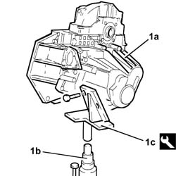
Applies to: engines: 2.0 JTS; all production periods
1. Fit the gearbox and differential (1a) on the overhaul stand using the tool (1b).
| Name | Country |
|---|---|---|
1b | Mount | 1.820.146.000 |
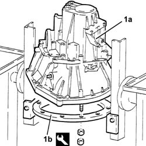
Applies to: engines: 2.0 JTS; all production periods
1. Remove the left internal differential driveshaft (1a) using tools (1b) and (1c).
| Name | Country |
|---|---|---|
1b | Flange | 1.820.229.000 |
| Name | Country |
|---|---|---|
1c | Counter weight | 1.821.161.000 |
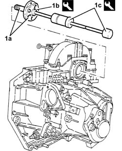
Applies to: engines: 2.0 JTS; all production periods
1. Undo the bolts (1a) and remove the flanges on the differential (1b), complete with seals.
2. Remove the adjustment shim.
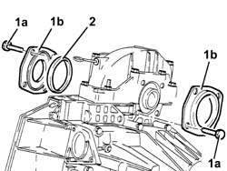
Applies to: engines: 2.0 JTS; all production periods
1. Undo the bolts (1a) and remove the support for the differential internal housing (1b).
2. Remove the differential.
3. Remove the differential bearing outer races.
4. Remove the magnet.
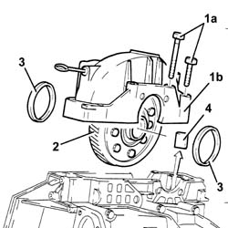
Applies to: engines: 2.0 JTS; all production periods
1. Remove the bolt for the Reverse gear shaft.
2. Undo the bolts (2a) and remove the gearbox casing (2b).
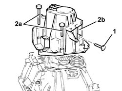
Applies to: engines: 2.0 JTS; all production periods
1. Loosen the bolts (1a) and (1b).
2. Remove the 5thspeed control rod (2a) from the Reverse gear selector fork (2b) and the 5thspeed selector (2c).
3. Remove the 5thspeed selector fork from the control rod.
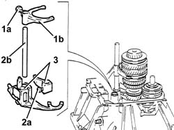
Applies to: engines: 2.0 JTS; all production periods
1. At the same time, remove the main shaft, layshaft, reverse shaft and 1st, 2nd, 3rdand 4thspeed selector fork assemblies.
Separate the selector forks from the rods.
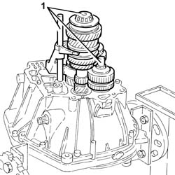
Applies to: engines: 2.0 JTS; all production periods
1. Remove the clutch release bearing fork.
2. Remove the outer non-slip bush.
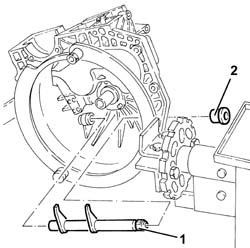
Applies to: engines: 2.0 JTS; all production periods
1. Remove the inner non-slip bush (1a) using the tools (1b) and 1c).
| Name | Country |
|---|---|---|
1b | Extractor | 1.820.626.000 |
| Name | Country |
|---|---|---|
1c | Counter weight | 1.840.206.001 |
2. Undo the bolts (2a) and remove the main shaft cover (2b).
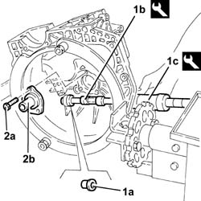
Applies to: engines: 2.0 JTS; all production periods
1. Remove the main shaft rear bearing outer race (1a) using the tools (1b) and (1c).
| Name | Country |
|---|---|---|
1b | Tool for Extracting/Fitting | 1.870.655.000 |
| Name | Country |
|---|---|---|
1c | Counter weight | 1.840.206.001 |
2. Remove the main shaft scraper ring.
3. Remove the lubrication duct.
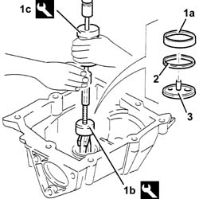
Applies to: engines: 2.0 JTS; all production periods
1. Remove the layshaft rear bearing outer race (1a) using the tools (1b) and (1c).
| Name | Country |
|---|---|---|
1b | Tool for Extracting/Fitting | 1.870.655.000 |
| Name | Country |
|---|---|---|
1c | Counter weight | 1.840.206.001 |
2. Remove the layshaft scraper ring.
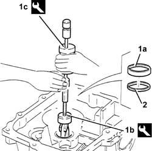
Applies to: engines: 2.0 JTS; all production periods
Proceed with dismantling the layshaft, following the instructions given below.
1. Check, in three places, that the gap between the gear teeth and the synchronizer ring support surfaces are within the recommended values.
If the figures do not correspond with the recommended values, during reassembly, the worn synchronizer should be replaced.
 | Measurement | Value | |
|---|---|---|---|
1 | Gear. teeth clearance and synchronizer ring support. surfaces (mm) | >= 0.8 |
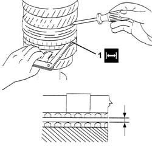
Applies to: engines: 2.0 JTS; all production periods
1. Remove the rear bearing (1a) and the 6thspeed driven gear (1b), using a hydraulic press, the plate (1c) with the half rings (1d) and a suitable drift (1e).
| Name | Country |
|---|---|---|
1c | Plate | 1.820.047.002 |
| Name | Country |
|---|---|---|
1d | Half-rings | 1.870.675.000 |
2. Remove the spacer.
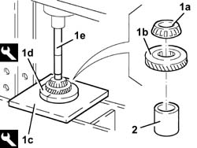
Applies to: engines: 2.0 JTS; all production periods
1. Remove the 5thspeed driven gear (1a) and the 4thspeed driven gear (1b) using a hydraulic press and the plate (1c) with the half rings (1d).
| Name | Country |
|---|---|---|
1c | Plate | 1.820.047.002 |
| Name | Country |
|---|---|---|
1d | Half-rings | 1.870.675.000 |
2. Remove the spacer.
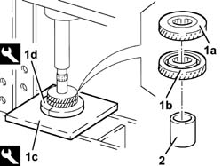
Applies to: engines: 2.0 JTS; all production periods
1. Remove the 3rdspeed driven gear (1a) and the 2ndspeed driven gear (1b) using a hydraulic press, the plate (1c) and the half rings (1d).
| Name | Country |
|---|---|---|
1c | Plate | 1.820.047.003 |
| Name | Country |
|---|---|---|
1d | Half-rings | 1.820.046.000 |
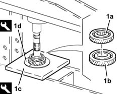
Applies to: engines: 2.0 JTS; all production periods
1. Remove the needle bearing for the 2ndspeed driven gear.
2. Remove the 1stand 2ndspeed 'triple cone' synchronizer.
3. Remove the 1stand 2ndspeed and Reverse gear engagement sliding sleeve (3a) with the springs (3b) and rollers (3c).
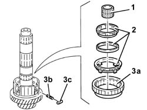
Applies to: engines: 2.0 JTS; all production periods
1. Remove the circlip using pliers.
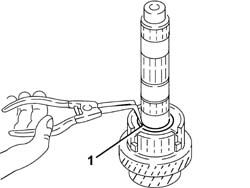
Applies to: engines: 2.0 JTS; all production periods
1. Remove the 1st, 2ndand Reverse gear sliding sleeve hub (1a), the 1stspeed 'triple cone' synchronizer (1b), the 1stspeed driven gear (1c) using a hydraulic press, the plate (1d) and the half rings (1e).
| Name | Country |
|---|---|---|
1d | Plate | 1.820.047.003 |
| Name | Country |
|---|---|---|
1e | Half-rings | 1.820.046.000 |
2. Remove the needle bearing for the 1stspeed driven gear.
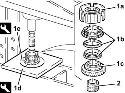
Applies to: engines: 2.0 JTS; all production periods
1. Remove the circlip using pliers.
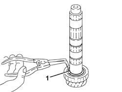
Applies to: engines: 2.0 JTS; all production periods
1. Remove the front bearing (1a) using a hydraulic press, a suitable plate (1b), the reaction base (1c) with the outer race (1d) for the bearing in question on the inside.
| Name | Country |
|---|---|---|
1c | Reaction base | 1.870.660.000 |
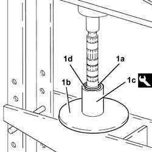
Applies to: engines: 2.0 JTS; all production periods
Proceed with dismantling the Reverse gear shaft following the instructions given below.
1. Remove the Reverse drive gear-synchronizer assembly from the Reverse gear shaft.
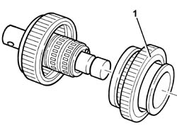
Applies to: engines: 2.0 JTS; all production periods
1. Remove the circlip using pliers.
2. Remove the Reverse gear synchronizer.
3. Remove the spring (3a) from the Reverse drive gear (3b).
Applies to: engines: 2.0 JTS; all production periods
1. Remove the O-ring.
2. Remove the pin.
3. Remove the needle bearing for the Reverse drive gear (3a) complete with bush (3b).
4. Remove the Reverse driven gear.
5. Remove the needle bearing for the Reverse driven gear.
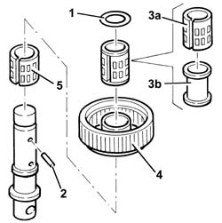
Applies to: engines: 2.0 JTS; all production periods
Refitting
RemovingProceed with reassembling the Reverse shaft following the instructions given below.
1. Fit the needle bearing for the Reverse drive gear (1a) on the Reverse shaft (1b).
2. Fit the Reverse driven gear.
3. Fit the needle bearing for the Reverse drive gear complete with bush.
4. Fit the pin.
5. Fit a new O-Ring seal.
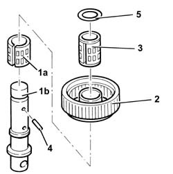
Applies to: engines: 2.0 JTS; all production periods
1. Fit the spring (1a) on the Reverse drive gear (1b).
2. Fit the Reverse synchronizer.
3. Fit the circlip.
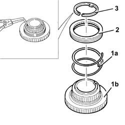
Applies to: engines: 2.0 JTS; all production periods
Fit the Reverse drive gear - Reverse synchronizer assembly on the Reverse shaft.
Applies to: engines: 2.0 JTS; all production periods
Proceed with the reassembly of the layshaft, following the instructions given below.
 | Type | Component | Name | Qty. |
|---|---|---|---|---|
- | Oil | MANUAL GEARBOX | TUTELA ZC 75 FF SEMI SYNTH | - |
1. Fit the front bearing (1a), using a hydraulic press, a suitable plate (1b) and the fitting tool (1c).
| Name | Country |
|---|---|---|
1c | Tool for Extracting/Fitting | 1.870.658.000 |
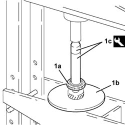
Applies to: engines: 2.0 JTS; all production periods
1. Using a feeler gauge, measure the housing for the front bearing circlip to be fitted.
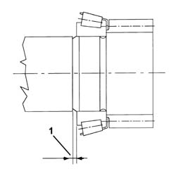
Applies to: engines: 2.0 JTS; all production periods
1. Fit a new front bearing circlip.
2. Fit the needle bearing for the 1stspeed driven gear.
3. Fit the 1stspeed driven gear.
4. Fit the 1stspeed 'triple cone' synchronizer.
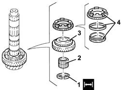
Applies to: engines: 2.0 JTS; all production periods
1. Fit the hub for the 1st, 2ndand Reverse sliding sleeve (1a), using a hydraulic press, a suitable plate (1b) and the fitting tool (1c).
| Name | Country |
|---|---|---|
1c | Tool for Extracting/Fitting | 1.870.658.000 |
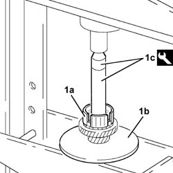
Applies to: engines: 2.0 JTS; all production periods
1. Fit a new circlip.
2. Fit the springs on the hub for the 1st, 2ndand Reverse sliding sleeve.
3. Fit the 1st, 2ndand Reverse sliding sleeve so that the internal references correspond with the springs.
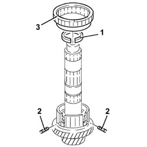
Applies to: engines: 2.0 JTS; all production periods
1. Fit the rollers on the 1st, 2ndand Reverse sliding sleeve making sure that they fit correctly in the housings.
2. Fit the needle bearing for the 2ndspeed driven gear.
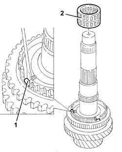
Applies to: engines: 2.0 JTS; all production periods
1. Fit the 'triple cone' synchronizer (1a) on the 2ndspeed driven gear (1b).
2. Fit the assembly constructed as described in the previous step on the layshaft.
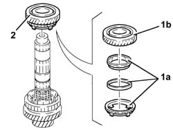
Applies to: engines: 2.0 JTS; all production periods
1. Fit the 3rdspeed driven gear (1a), using a hydraulic press, a suitable plate (1b) and the fitting tool (1c).
| Name | Country |
|---|---|---|
1c | Tool for Extracting/Fitting | 1.870.658.000 |
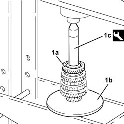
Applies to: engines: 2.0 JTS; all production periods
1. Fit the spacer.
Heat the 4thspeed driven gear to 120 °C.
2. Fit the 4thspeed driven gear (2a), using a hydraulic press, a suitable plate (2b) and the top end of the tool (2c).
| Name | Country |
|---|---|---|
1c | Tool for Extracting/Fitting | 1.870.658.000 |
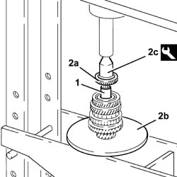
Applies to: engines: 2.0 JTS; all production periods
1. Fit the 5thspeed driven gear (1a), using a hydraulic press, a suitable plate (1b) and the top end of the tool (1c).
| Name | Country |
|---|---|---|
1c | Tool for Extracting/Fitting | 1.870.658.000 |
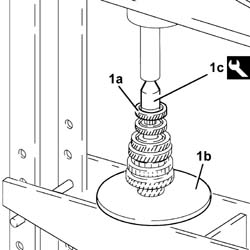
Applies to: engines: 2.0 JTS; all production periods
1. Fit the 6thspeed driven gear (1a), using a hydraulic press, a suitable plate (1b) and the top end of the tool (1c).
| Name | Country |
|---|---|---|
1c | Tool for Extracting/Fitting | 1.870.658.000 |
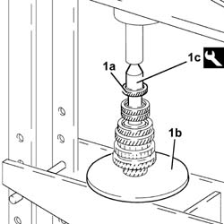
Applies to: engines: 2.0 JTS; all production periods
1. Fit the rear bearing (1a), using a hydraulic press, a suitable plate (1b) and the fitting tool (1c).
| Name | Country |
|---|---|---|
1c | Fitting tool | 1.870.659.000 |
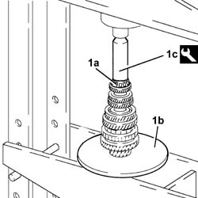
Applies to: engines: 2.0 JTS; all production periods
1. Fit the inner non-slip bush (1a) for the selector fork shaft using a suitable fitting tool (1b).
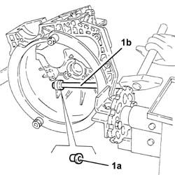
Applies to: engines: 2.0 JTS; all production periods
At the same time, fit the main and layshafts in their housings.
If the following components are replaced:
main shaft.
bell housing,
gearbox casing,
main shaft front bearing,
main shaft rear bearing,
complete layshaft,
layshaft rear bearing,
3rd, 4th, 5thand 6thspeed driven gears,
determine the size of the adjustment rings for the main and layshaft bearing pre-loading following the instructions given below.
Thoroughly clean the support surfaces of the bearings and gearbox casing.
1. Position the two gauges in the rear bearing seats in the gearbox casing.
| Name | Country |
|---|---|---|
1 | Gauges | 1.870.648.000 |
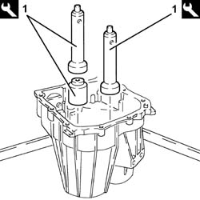
Applies to: engines: 2.0 JTS; all production periods
1. Fit the reference crossmember on the gearbox casing.
| Name | Country |
|---|---|---|
1 | Reference crossmember | 1.870.649.000 |
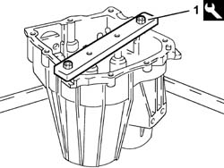
Applies to: engines: 2.0 JTS; all production periods
1. Place the two cylinders for the gauges in contact (without force) with the lower surface of the reference crossmember acting via the two special openings using a screwdriver.
2. Lock the two cylinders using the bolts.
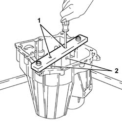
Applies to: engines: 2.0 JTS; all production periods
Remove the reference crossmember and the gauges from the gearbox casing.
1. Fit the two gauges (1a) on the tool plate (1b).
| Name | Country |
|---|---|---|
1a | Gauges | 1.870.648.000 |
| Name | Country |
|---|---|---|
1b | Mount | 1.870.647.000 |
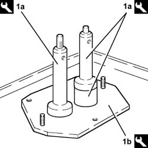
Applies to: engines: 2.0 JTS; all production periods
1. Prepare the tool for checking the bearing (1a) pre-loading using the special stud bolts (1b), spacer (1c) and disc (1d) for 6 speed gearboxes.
| Name | Country |
|---|---|---|
1a | Mount | 1.870.647.000 |
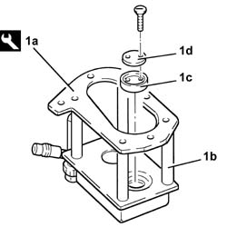
Applies to: engines: 2.0 JTS; all production periods
1. Match the support for determining the bearing pre-loading prepared in this way with the base plate complete with gauges.
2. Connect the tool to an air line and supply a pressure of 0.5 bar so that the two actuators come into contact with the gauges.
3. Fit the two dial gauges on the tool and zero them with a pre-loading of 3 mm (see reference X in the example for calculating the size of the adjustment rings).
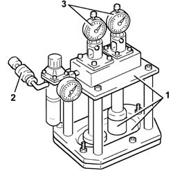
Applies to: engines: 2.0 JTS; all production periods
Remove the support for determining the bearing pre-loading from the base plate complete with gauges.
1. Remove the disc.
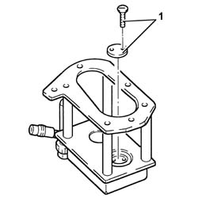
Applies to: engines: 2.0 JTS; all production periods
1. Position the support for determining the bearing pre-loading on the gearbox casing support and fix it.
2. Connect the tool to an air line and supply a pressure of 4 bar.
3. Rotate the main and layshafts through ten revolutions using the tool (3a) and a suitable crank (3b).
| Name | Country |
|---|---|---|
3a | Bush | 1.870.652.000 |
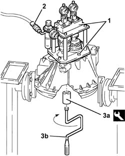
Applies to: engines: 2.0 JTS; all production periods
Using the dial gauges, measure the differences for the layshaft and the main shaft, respectively (see reference Y in the example for calculating the size of the adjustment shims).
Add 0.15 mm to the difference between X and Y for the layshaft to obtain the necessary measurement for selecting the correct size of adjustment shim to be used.
Subtract 0.15 mm from the difference between X and Y for the main shaft to obtain the necessary measurement for selecting the correct size of adjustment shim to be used.'
Reference distance X (casing)
Zero the dial gauge with a 3 mm pre-loading on the checking tool.
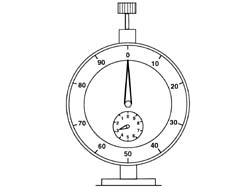
Applies to: engines: 2.0 JTS; all production periods
Reference distance Y (shafts)
For simplicity, let us consider that we have detected a difference of 0.9 mm, both for the layshaft and the main shaft.
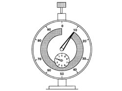
Applies to: engines: 2.0 JTS; all production periods
Calculation of size of layshaft adjustment shim
0.15 mm should be added to the difference between X and Y; in order to understand the term 'added' better, let us imagine that the pointer will move forward by 0.15 mm i.e. 0.9 + 0.15 = 1.05 mm (size of adjustment shim).
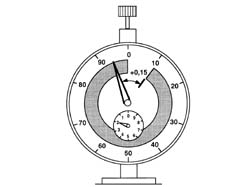
Applies to: engines: 2.0 JTS; all production periods
Calculation of size of main shaft adjustment ring
0.15 mm should be subtracted from the difference between X and Y; in order to understand the term 'subtracted' better, let us imagine that the pointer will move back by 0.15 mm, i.e. 0.9 - 0.10 = 0.75 mm (size of adjustment shim).'
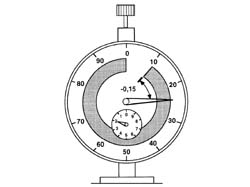
Applies to: engines: 2.0 JTS; all production periods
Remove the tool for determining the bearing pre-loading from the gearbox casing support.
1. Fit the lubrication duct.
2. Fit the main shaft adjustment ring in the size calculated.
3. Fit the main shaft rear bearing outer race (3a), using a hydraulic press, a suitable plate (3b) and the fitting tool (3c).
| Name | Country |
|---|---|---|
3c | Fitting tool | 1.870.657.000 |
Applies to: engines: 2.0 JTS; all production periods
1. Fit the layshaft adjustment shim of the size calculated.
2. Fit the layshaft rear bearing outer race (2a), using a hydraulic press, a suitable plate (2b) and the fitting tool (2c).
| Name | Country |
|---|---|---|
2c | Fitting tool | 1.870.657.000 |
Applies to: engines: 2.0 JTS; all production periods
Fit the Reverse shaft and the 1st, 2nd, 3rdand 4thspeed control rods and selector forks.
1. Lift up the Reverse driven gear and check that the Reverse shaft pin is correctly positioned.
Applies to: engines: 2.0 JTS; all production periods
1. Fit the 5thspeed and Reverse selector forks.
2. Fit the 5thspeed and Reverse control rod (2a) and fix it tightening the bolt (2b) to the recommended torque.
 | Fastening | Component | Ø | Value (daNm) |
|---|---|---|---|---|
2b | Bolt | 5thª speed control rod | M8 | 2.1 - 2.6 |
3. Fit the 5thspeed selector fork (3a) and fix it tightening the bolt (3b) to the recommended torque.
| Fastening | Component | Ø | Value (daNm) |
|---|---|---|---|---|
3b | Bolt | 5thª speed selector fork | M8 | 2.1 - 2.6 |
Applies to: engines: 2.0 JTS; all production periods
Apply the recommended sealant to the entire matching surface of the gearbox casing.
| Type | Component | Name | Qty. |
|---|---|---|---|---|
- | Sealant | GEARBOX GEAR CASING | Loctite 510 | - |
1. Fit the gearbox casing (1a) and fix it tightening the bolts (1b) to the recommended torque.
| Fastening | Component | Ø | Value (daNm) |
|---|---|---|---|---|
1b | Bolt | GEARBOX GEAR CASING | M9 | 2.9 - 3.6 |
2. Tighten the Reverse shaft bolt to the recommended torque.
| Fastening | Component | Ø | Value (daNm) |
|---|---|---|---|---|
2 | Bolt | Reverse shaft | M10 | 4.3 - 5.3 |
Applies to: engines: 2.0 JTS; all production periods
Fit the magnet.
Fit the differential in its housing complete with bearing outer races.
Apply the recommended sealant to the entire matching surface of the differential internal housing support.
| Type | Component | Name | Qty. |
|---|---|---|---|---|
- | Sealant | GEARBOX DIFFERENTIAL MOUNT | Loctite 510 | - |
1. Fit the differential internal housing support (1a) and fix it tightening the bolts (1b) to the recommended torque.
| Fastening | Component | Ø | Value (daNm) |
|---|---|---|---|---|
1b | Bolt | GEARBOX DIFFERENTIAL MOUNT | M10 | 4.3 ÷ 5.3 |
| Fastening | Component | Ø | Value (daNm) |
|---|---|---|---|---|
1b | Bolt | GEARBOX DIFFERENTIAL MOUNT | M8 | 2.1 - 2.6 |
Applies to: engines: 2.0 JTS; all production periods
1. Fit the flange on the differential, gearbox side (1a), complete with a new seal and fix it tightening the bolts (1b) to the recommended torque.
| Fastening | Component | Ø | Value (daNm) |
|---|---|---|---|---|
1b | Bolt | MAN G/BOX DIFF SEALING FLANGE/S | M8 | 2.1 - 2.6 |
Applies to: engines: 2.0 JTS; all production periods
Using a suitable drift, tighten the pinion side bearing outer race.
1. Position the tool, complete with dial gauge, on the surface of the differential, engine side, and zero the dial gauge with a pre-loading of 1 mm.
| Name | Country |
|---|---|---|
1 | Dial gauge mounting | 1.820.085.000 |
Applies to: engines: 2.0 JTS; all production periods
1. Position the tool (1a), complete with dial gauge, on the differential flange, engine side (1b) and measure the difference.
| Name | Country |
|---|---|---|
1a | Dial gauge mounting | 1.820.085.000 |
Applies to: engines: 2.0 JTS; all production periods
Calculate the size 'S' of the scraper ring for pre-loading the differential bearings, adding 0.12 mm to the difference measured.
1. Place in the housing the adjustment shim or shims for pre-loading the differential bearings, of the size calculated or the next size up.
2. Fit the flange on the differential, engine side (2a), complete with a new seal and fix it tightening the bolts (2b) to the recommended torque.
| Fastening | Component | Ø | Value (daNm) |
|---|---|---|---|---|
2b | Bolt | MAN G/BOX DIFF SEALING FLANGE/S | M8 | 2.1 - 2.6 |
3. Fit the main shaft cover (3a) and fix it using the bolts (3b).
Applies to: engines: 2.0 JTS; all production periods
Fit the clutch release bearing fork.
Fit the outer non-slip bush.
Fit the left inner driveshaft.
Undo the fixings and remove the gearbox and differential from the tool.
| Name | Country |
|---|---|---|
- | Mount | 1.820.146.000 |
Remove the tool supporting the overhaul stand and put it back.
Position the gearbox and differential on the tool used for the removing-refitting from the vehicle.
| Name | Country |
|---|---|---|
- | Mount | 1.870.644.001 |